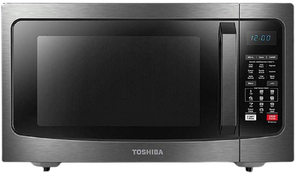
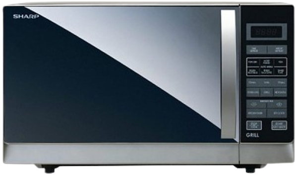
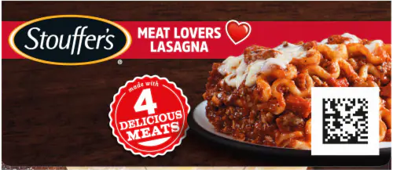
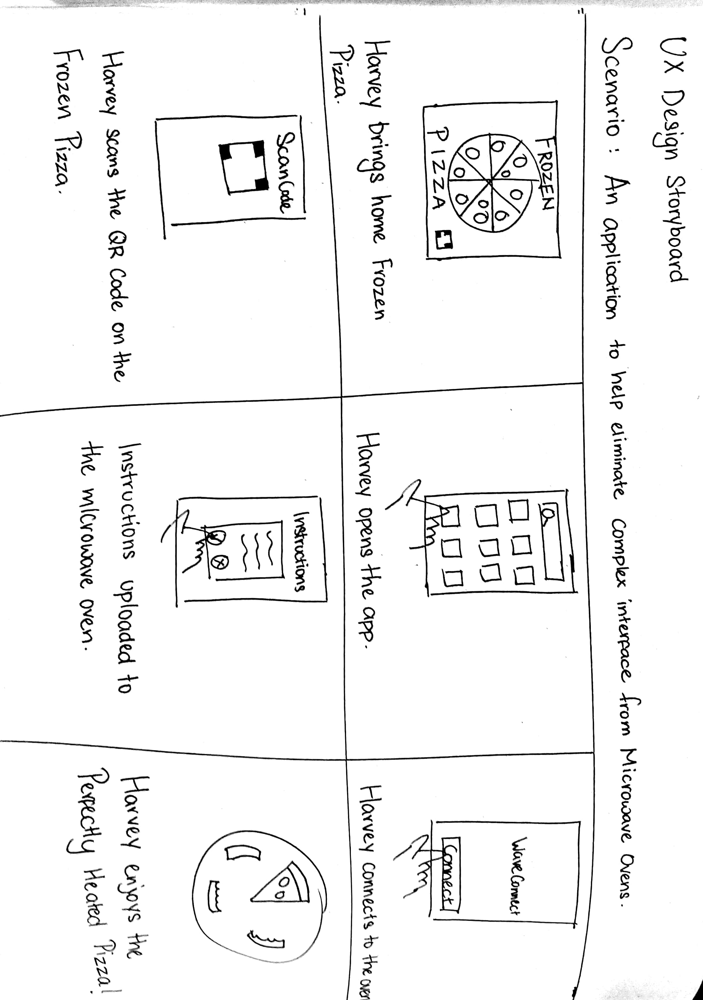
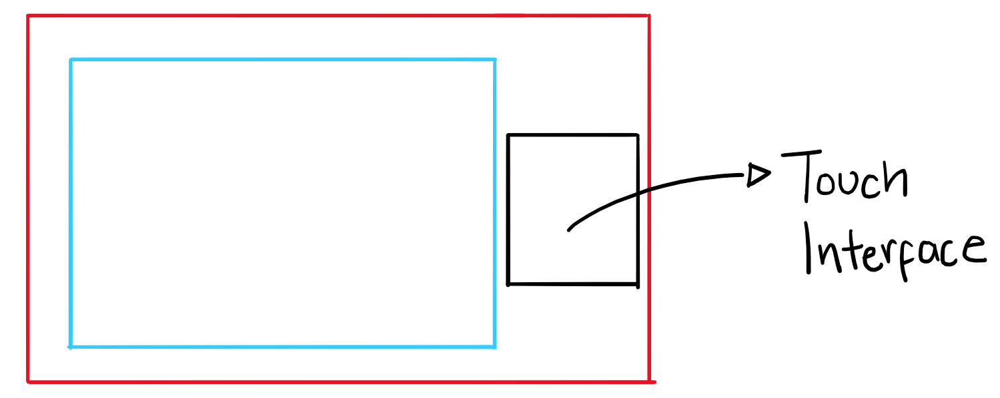

Examples of Existing Microwave Oven Interfaces


The most prominent feature of both these Microwave Oven are the sheer number of interface options available in them. I completely agree that all the features present in the interface are necessary to use the Microwave Oven to its fullest extent. My question is, why does an equipment that is so widely used and so regularly used have such a deep learning curve and is there a way to make the process simpler?
Assumptions and Solutions
To create the best possible design solutions for this problem, I am going to make one major assumption. The Microwave Oven is capable of either connecting to a nearby WiFi network or it has Bluetooth Capabilities.
Based on this assumption, I have designed a mobile application which goes along with the Microwave Oven. The mobile application has two main components to it:
1. The Mobile Application can scan Barcodes or QR Codes present in pre-packaged or frozen food to directly input the heating instructions into the Microwave. The QR Code with the instructions has to be included by the manufacturer of the product but by including it, the users do not have to worry about misunderstanding the instructions and this will drastically improve the user's experience with the product.

2. The Mobile Application can directly control the other functionalities of the Microwave Oven such as the Grilling or Defrosting function.
With these two options, we can completely eliminate or at least, significantly reduce the learning curve present when using a Microwave Oven.
User Storyboard
To get a better understanding how and under what circumstances users would interact with the microwave and the mobile application, I have created a user storyboard.

Microwave Oven Sketch
To get an idea of how the interface of the microwave oven would change following the redesign of the user experience, I have created a rough sketch of how it would look. It is basically a touch interface that will not have a plethora of buttons or options that may confuse the user. Instead, it will graphically depict the functions that is present in the microwave.

Low-Fidelity Prototype of the Mobile App
In the low-fidelity prototype, I illustrated the main journey which the user would follow when trying to import the heating instruction from pre-packaged food, directly into the microwave. This way, I can get a clearer idea when I move on to creating the high-fidelity prototype of the application.
Final Verdict
This project was just me trying to be creative to solve a problem that most people encounter as well as simplify a process that occurs very often. The idea of this application is to enable the users to control other functionalities of the microwave oven such as the different heating options. For this reason, I have left it out of the prototype as this will vary from Microwave to Microwave. I feel that the prototype accurately represents the journey taken by users to directly import the instructions into the microwave. As for the visual design, I feel that the design looks clean, focusing only on the essentials of the application and also looks visually appealing.
As I am constantly trying to be a better designer, feedback is always appreciated so please do not hesitate to contact me. Thank You for reading my project, I hope you liked it! :)